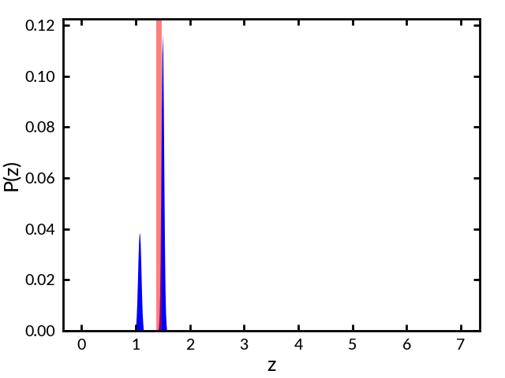

BPZ results for UDFtest.cat
Object #3088 BPZ = 0.19 [0.07--0.43] type = 3.33 chisq2 = 0.13 ODDS = 0.87 spec-z = 0.13
Object #8810 BPZ = 0.72 [0.55--0.89] type = 3.67 chisq2 = 2.69 ODDS = 1.00 spec-z = 0.74
Object #8461 BPZ = 1.50 [1.03--1.75] type = 3.00 chisq2 = 0.00 ODDS = 0.72 spec-z = 1.43

Object #2225 BPZ = 5.76 [5.10--6.42] type = 6.67 chisq2 = 0.13 ODDS = 1.00 spec-z = 5.82